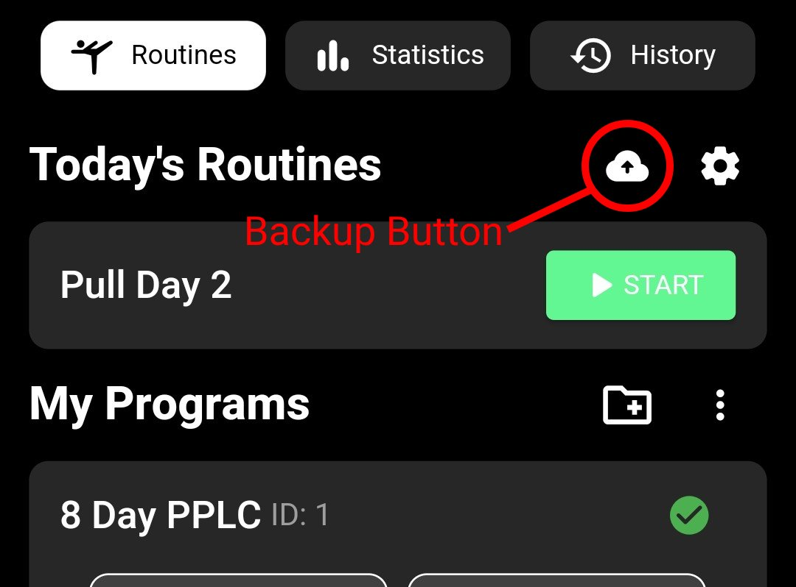
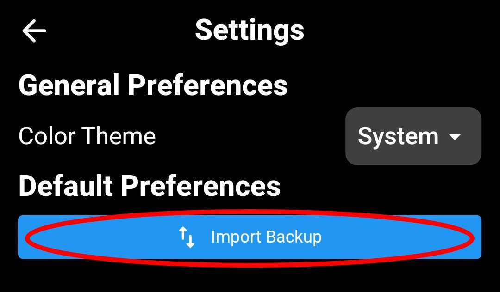

The following additions were made to v1.1.0-alpha:
Email sign-in/sign-up authentication methods
Google and Facebook sign-in authentication methods
Bottom navigation bar for upcoming features
"Logout" and "Delete Account" buttons in settings page
Version 1.0.0-alpha
This is the very first version of Grin&Gain released to the public. This version does not have
any sign-in methods, therefore utilizing the text backup methods mentioned in App
Update Recommendations is highly recommended for this
version. Some key features that were introduced in this version are shown below:
Custom Exercises, Routines, and Programs for logging workouts
Basic graphs, tables, and statistics for gaining insights
Workout Routine History for each completed routine
Access to an online exercise database
Ability to add YouTube video links within Exercise Details
Temporary Backup/Restore method using Copy/Paste JSON text
Dynamic exercise player for tracking workouts
Tips & Recommendations
App Update Recommendations
Before downloading updates to the early access versions of the app, it's highly recommended to
back
up
your
data. Follow these steps to ensure your data is safe:
Backup Data: Copy the encoded JSON data from the app. This data contains
important
information that you may need in case of data loss or issues during the update process.
Store
the
copied JSON text in a safe location, such as a notes
app or online document.

Import Backup: In case of data loss, you can import the data by pasting the
JSON
text into import backup option in the settings page.

By following these recommendations, you can prevent data loss and ensure a smooth update process
for
the
early access versions of the app. Improved backup and restore options will be included in
upcoming
updates.
Download Instructions for iOS
To access Grin&Gain's early access versions on iOS devices, sideloading the app is required to
install
.IPA files. We recommend using Sideloadly for this purpose.
Download Sideloading Tool (Sideloadly): Go to the Sideloading Tool
(Sideloadly)
and
download the tool to your computer.
Connect Your iPhone to Your Computer: Use a USB cable to connect your
iPhone to
your computer. Make sure to unlock your iPhone and trust the computer if prompted.
Launch Sideloading Tool: Once you've downloaded Sideloading Tool, launch
the
application on your computer. It should detect your connected iPhone automatically.
Locate the IPA File: Find the IPA file you want to sideload onto your
iPhone.
Ensure it's a legitimate file from a trusted source.
Drag and Drop the IPA File: In Sideloading Tool, locate the section where
you
can
drag and drop IPA files. Drag the IPA file you downloaded earlier onto this section.
Start the Sideloading Process: After dropping the IPA file, you may need to
confirm
some details or settings within Sideloading Tool. Follow any on-screen instructions to
proceed
with
the sideloading process.
Wait for the Process to Complete: Sideloading the IPA file onto your iPhone
may
take a few moments. Wait for the process to complete without interrupting it.
Trust the Developer: Once the sideloading process is complete, unlock your
iPhone
and navigate to Settings > General > VPN & Device Management. Find the profile
associated
with the sideloaded app and trust it.
Launch the App: After trusting the developer, you can now find the
sideloaded
app
on your iPhone's home screen. Tap on the app icon to launch it.
Enjoy Your App: You've successfully sideloaded the IPA file onto your
iPhone
using
Sideloading Tool. Now, you can enjoy using the app just like any other installed
application.
For Windows Users
For Mac Users
Download Instructions for Android
Enable Unknown Sources: Before downloading APK files from third-party
websites,
ensure that your device allows installations from unknown sources. Go to Settings >
Security
(or
Privacy) and enable the option that allows installation from unknown sources.
Download the APK: Tap on the download link for Android.
Review Permissions and Install: Once the APK file is downloaded, open it
from
the
notification shade or from the Downloads folder on your device. You may be prompted to
review
the
permissions required by the app. After reviewing the permissions, tap "Install" to proceed
with
the
installation.
Wait for Installation: The installation process will begin, and you may see
a
progress indicator. Once the installation is complete, you'll see a confirmation message.
You
can
then open the app from your device's home screen or app drawer and start using it.